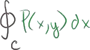
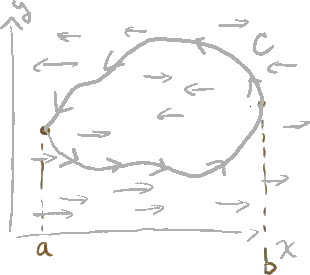
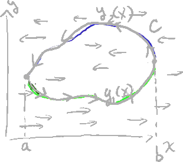
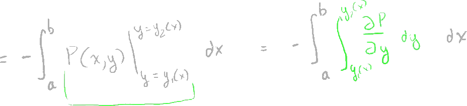

Green's Theorem Proof Part 1
The following is a summary of a lecture video. You may click on the '+' buttons next to the figures in order to expand further details.
Let's say we have a path in the xy plane.
+

That's my y-axis, that is my x-axis, in my path will look like this.
Let's say it looks like that; trying to draw a bit of an arbitrary path, and let's say we go in a counter clockwise direction like that along our path.
And we could call this path-- so we're going in a counter clockwise direction --we could call that path c.
And let's say we also have a vector field.
And our vector field is going to be a little unusual; I'll call it p.
+

It only has an i component, or all of its vectors are only multiples of the i-unit vector.
So it's capital P of xy times the unit vector i.
+

There is no j component, so if you have to visualize this vector field, all of the vectors, they're all multiples of the i-unit vector.
Or they could be negative multiples, so they could also go in that direction.
But they don't go diagonal or they don't go up.
They all go left to right or right to left.
That's what this vector field would look like.
+

Now what I'm interested in doing is figuring out the line integral over a closed loop-- the closed loop c, or the closed path c --of p dot dr, which is just our standard kind of way of solving for a line integral.
And we've seen what dr is in the past.
+

dr is equal to dx times i plus dy times the j-unit vector.
And you might say, isn't it dx, dt times dt?
+

Let me write that can't dr be written as dx, dt times dti plus dy, dt times dtj?
And it could, but if you imagine these differentials could cancel out, and you're just left with the dx and a dy, and we've seen that multiple times.
And I'm going to leave it in this form because hopefully, if we're careful, we won't have to deal with the third parameter, t.
So let's just look at it in this form right here with just the dx's and the dy's.
So this integral can be rewritten as the line integral, the curve c-- actually let me do it over down here.
+

The line integral over the path of the curve c of p dot dr.
So we take the product of each of the coefficients, let's say the coefficient of the i component, so we get p-- I'll do that in green, actually do that purple color --so we get p of xy times dx plus-- well there's no 0 times j times dy; 0 times dy id just going to be 0 --so this our line integral simplified to this right here.

This is equal to this original integral up here, so we're literally just taking the line integral around this path.
Now I said that we play our cards right, we're not going to have to deal with the third variable, t; that we might be able just solve this integral only in terms of x.
And so let's see if we can do that.
So let's look at our minimum and maximum x points.
+

That looks like our minimum x point.
Let's call that a.
Let's call that our maximum x point; let's call that b.

What we could do is we can break up this curve into two functions of x.
So this bottom one right here we could call as y1 of x.
This is just a standard curve; you know when we were just dealing with standard calculus, this is just you can imagine this is f of x and it's a function of x.
And this is y2 of x.
Just like that.
So you can imagine two paths; one path defined by y1 of x-- let me do that in a different color; magenta --one path defined by y1 of x as we go from x is equal to a to x is equal to b, and then another path defined by y2 of x as we go from x is equal to b to x is equal to a.

+

So what we could do is, we could rewrite this integral-- which is the same thing as that integral --as this is equal to the integral-- we'll first do this first path --of x going from a to b of p of x.
And I could to say p of x and y, but we know along this path y is a function of x.
So we say x and y1 of x.
Wherever we see a y we substitute it with a y1 of x, dx.
So that covers that first path; I'll do it in the same color.
We could imagine this is c1.
This is kind of the first half of our curve-- well it's not exactly the half --but that takes us right from that point to that point.
And then we want to complete the circle.
Maybe I'll do that, and I'll do that in yellow.
That's going to be equal to-- sorry we're going to have to add these two --plus the integral from x is equal to b to x is equal to a of-- do it in that same color --of p of x.
And now y is going to be y2 of x.
Wherever you see a y, you can substitute with y2 of x along this curve.
y2 of x, dx.
This is already getting interesting and you might already see where I'm going with this.
So this is the curve c2.
I think you appreciate if you take the union of c1 and c2, we've got our whole curve.
So let's see if we can simplify this integral a little bit.
Well one thing we want to do, we might want to make their end points the same.
So if you swap a and b here, it just turns the integral negative.
+

So you make this into a b, that into an a, and then make that plus sign into a minus sign.
+

And now we can rewrite this whole thing as being equal to the integral from a to b of this thing, of p of x and y1 of x minus this thing, minus p of x and y2 of x, and then all of that times dx.
I'll write it in a third color.
Now, I'm going to do something a little bit arbitrary, but I think you'll appreciate why I did this by the end of this video, and it's just a very simple operation.
What I'm going to do is I'm going to swap these two.
So I'm essentially going to multiply this whole thing by negative 1, or essentially multiply and divide by negative 1.
So I can multiply this by negative 1 and then multiply the outside by negative 1, and I will not have changed the integral; I'm multiplying by negative 1 twice.
So if I swap these two things, if I multiply the inside times negative 1, so this is going to be equal to-- do the outside of the integral, a to b.
+

If I multiply the inside-- I'll do a dx out here --if I multiply the inside of the integral by negative 1, these two guys switch.
So it becomes p of x of y2 of x.
And then you're going to have minus p of x and y1 of x.
My handwriting's getting a little messy.
But I can't just multiply just the inside by minus 1.
I don't want to change the integral, so I multiplied the inside by minus 1, let me multiply the outside by minus 1.
And since I multiplied by minus 1 twice, these two things are equivalent.
Or you could say this is the negative of that.
Either way, I think you appreciate that I haven't changed the integral at all, numerically.
I multiplied the inside and the outside by minus 1.
And now the next step I'm going to do, it might look a little bit foreign to you, but I think you'll appreciate it.
It might be obvious to you if you've recently done some double integrals.
+

So this thing can be rewritten as minus the integral from a to b of-- and let me do a new color --of the function p of x, y evaluated at y2 of x minus-- and let me make it very clear; this is y is equal to y2 of x --minus this function evaluated at y is equal to y1 of x.
And of course all of that times dx.
This statement and what we saw right here-- this statement right here --are completely identical.
And then if we assume that a partial derivative of capital P with respect to y exists, hopefully you'll realize-- and I'll focus on this a little bit because I don't want to confuse you on this step.
Let me write the outside of this integral.
+

So this is going to be equal to-- and this is kind of a neat outcome, and we're starting to build up to a very neat outcome, which will probably have to take the next video to do --so we do the outside dx.
If we assume that capital P has a partial derivative, this right here is the exact same thing.
This right here is the exact same thing as the partial derivative of P with respect to y, dy, the antiderivative of that from y1 of x to y2 of x.

I want to make you feel comfortable that these two things are equivalent.
And to realize they're equivalent, you'll probably just have to start here and then go to that.
We're used to seeing this; we're used to seeing a double integral like this, and then the very first step we say, OK to solve this double integral we start on the inside integral right there, and we say, OK let's take the antiderivative of this with respect to y.
So if you take the antiderivative of the partial of p with respect to y, you're going to end up with p.
And since this is a definite integral, the boundaries are going to be in terms of x, you're going to evaluate that from y is equal to y2 of x, and you're going to subtract from that y is equal to y1 of x.
Normally we start with something like this, and we go to something like this.
This is kind of unusual that we started, we kind of solved, we started with the solution of the definite integral, and then we slowly built back to the definite integral.
So hopefully you realize that this is true, that this is just we're kind of going in a reverse direction than we normally do.
And if you do realize that, then we've just established a pretty neat outcome.
Because what is this right here?
Let me go back, let me see if I can fit everything.
I have some function-- and I'm assuming that the partial of P with respect to y exists --but I have some function defined over the xy plane.
You know, you could imagine we're dealing in three dimensions now.
We'll draw a little bit neater.
+

So that's y, that's x, that's z, so this, you could imagine, is some surface; it just happens to be the partial of P with respect to x.
So it's some surface on the xy plane like that.
We're taking the double integral under that surface, around this region.
The region's boundaries in terms of y are defined by y2 and y1 of x.
So you literally have that curve.
That's y2 on top, y1 on the bottom.
And so we're essentially taking the volume above.
So if you imagine with the base is-- the whole floor of this is going to be the area inside of this curve, and then the height is going to be the function partial of P with respect to y.
It's going to be a little hard for me to draw, but this is essentially some type of a volume, if you want to visualize it that way.
But the really neat outcome here is if you call this region r, we've just simplified this line integral.
And this was a special one.
It only had an x-component, the vector field, but we've just simplified this line integral to being equivalent to-- maybe I should write this line integral because that's what's the really neat outcome.
We've just established that this thing right here, which is the same as our original one, so let me write that.
+

The closed line integral around the curve c of p of xy, dx, we've just established that that's the same thing as the double integral over the region r-- this is the region r --of the partial of P with respect to y.
+

And we could write dy, dx, or we could write da, whatever you want to write, but this is the double integral over that region.
The neat thing here is using a vector field that only had an x-component, we were able to connect its line integral to the double integral over region-- oh, and I forgot something very important.
We had a negative sign out here.
So this was a minus sign out here.
Or we could even put the minus in here, but I think you get the general idea.
In the next video, I'm going to do the same exact thing with the vector field that only has vectors in the y-direction.
And then we'll connect the two and we'll end up with Green's theorem.